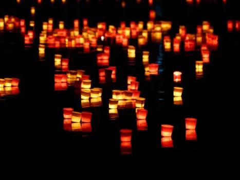
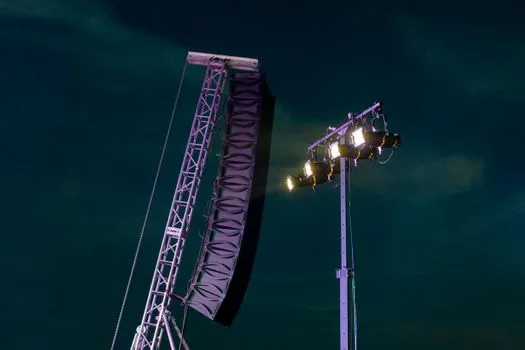
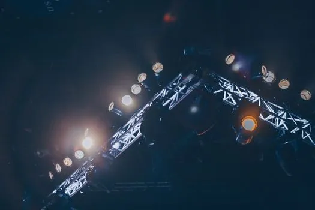
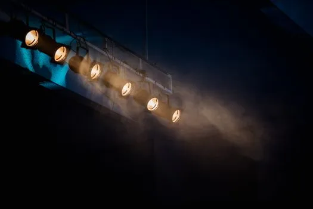

66894A serene photo of floating lanterns glowing on a dark lake at night.

66894A serene photo of floating lanterns glowing on a dark lake at night.

38954245Image of a concert speaker and stage lighting setup under the night sky.

976862Bright stage lights illuminate a concert venue, creating a vivid and celebratory atmosphere.

12092991Moody stage lighting with smoke effect to add atmospheric drama.